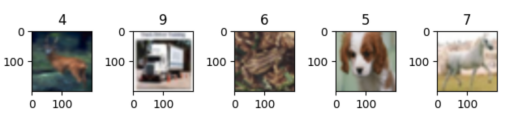

数据增强

概述
在计算机视觉任务中，数据量过小或是样本场景单一等问题都会影响模型的训练效果，用户可以通过数据增强操作对图像进行预处理，从而提升模型的泛化性。
MindSpore提供了c_transforms模块和py_transforms模块供用户进行数据增强操作，用户也可以自定义函数或者算子进行数据增强。
模块 |
实现 |
说明 |
|---|---|---|
c_transforms |
基于C++的OpenCV实现 |
具有较高的性能。 |
py_transforms |
基于Python的PIL实现 |
该模块提供了多种图像增强功能，并提供了PIL Image和NumPy数组之间的传输方法。 |
MindSpore目前支持的常用数据增强算子如下表所示，更多数据增强算子参见API文档。
模块 |
算子 |
说明 |
|---|---|---|
c_transforms |
RandomCrop |
在图像随机位置裁剪指定大小子图像。 |
RandomHorizontalFlip |
按照指定概率对图像进行水平翻转。 |
|
Resize |
将图像缩放到指定大小。 |
|
Invert |
将图像进行反相。 |
|
py_transforms |
RandomCrop |
在图像随机位置裁剪指定大小子图像。 |
Resize |
将图像缩放到指定大小。 |
|
Invert |
将图像进行反相。 |
|
Compose |
将列表中的数据增强操作依次执行。 |
c_transforms
下面将简要介绍几种常用的c_transforms模块数据增强算子的使用方法。
RandomCrop
对输入图像进行在随机位置的裁剪。
参数说明：
size：裁剪图像的尺寸。padding：填充的像素数量。pad_if_needed：原图小于裁剪尺寸时，是否需要填充。fill_value：在常量填充模式时使用的填充值。padding_mode：填充模式。
下面的样例首先使用顺序采样器加载CIFAR-10数据集[1]，然后对已加载的图片进行长宽均为10的随机裁剪，最后输出裁剪前后的图片形状及对应标签，并对图片进行了展示。
下载CIFAR-10数据集并解压，目录结构如下。
└─cifar-10-batches-bin
├── batches.meta.txt
├── data_batch_1.bin
├── data_batch_2.bin
├── data_batch_3.bin
├── data_batch_4.bin
├── data_batch_5.bin
├── readme.html
└── test_batch.bin
import matplotlib.pyplot as plt
import mindspore.dataset as ds
import mindspore.dataset.vision.c_transforms as c_trans
ds.config.set_seed(5)
ds.config.set_num_parallel_workers(1)
DATA_DIR = "cifar-10-batches-bin/"
sampler = ds.SequentialSampler(num_samples=3)
dataset1 = ds.Cifar10Dataset(DATA_DIR, sampler=sampler)
random_crop = c_trans.RandomCrop([10, 10])
dataset2 = dataset1.map(operations=random_crop, input_columns=["image"])
image_list1, label_list1 = [], []
image_list2, label_list2 = [], []
for data1, data2 in zip(dataset1.create_dict_iterator(), dataset2.create_dict_iterator()):
image_list1.append(data1['image'])
label_list1.append(data1['label'])
print("Source image Shape :", data1['image'].shape, ", Source label :", data1['label'])
image_list2.append(data2['image'])
label_list2.append(data2['label'])
print("Cropped image Shape:", data2['image'].shape, ", Cropped label:", data2['label'])
print("------")
num_samples = len(image_list1) + len(image_list2)
for i in range(num_samples):
if i < len(image_list1):
plt.subplot(2, len(image_list1), i + 1)
plt.imshow(image_list1[i].asnumpy())
plt.title(label_list1[i].asnumpy())
else:
plt.subplot(2, len(image_list2), i + 1)
plt.imshow(image_list2[i % len(image_list2)].asnumpy())
plt.title(label_list2[i % len(image_list2)].asnumpy())
plt.show()
输出结果如下：
Source image Shape : (32, 32, 3) , Source label : 6
Cropped image Shape: (10, 10, 3) , Cropped label: 6
------
Source image Shape : (32, 32, 3) , Source label : 9
Cropped image Shape: (10, 10, 3) , Cropped label: 9
------
Source image Shape : (32, 32, 3) , Source label : 9
Cropped image Shape: (10, 10, 3) , Cropped label: 9
------
图片展示如下：

RandomHorizontalFlip
对输入图像进行随机水平翻转。
参数说明：
prob: 单张图片发生翻转的概率。
下面的样例首先使用随机采样器加载CIFAR-10数据集[1]，然后对已加载的图片进行概率为0.8的随机水平翻转，最后输出翻转前后的图片形状及对应标签，并对图片进行了展示。
依照上文步骤下载CIFAR-10数据集并按要求存放。
import matplotlib.pyplot as plt
import mindspore.dataset as ds
import mindspore.dataset.vision.c_transforms as c_trans
ds.config.set_seed(6)
ds.config.set_num_parallel_workers(1)
DATA_DIR = "cifar-10-batches-bin/"
sampler = ds.RandomSampler(num_samples=4)
dataset1 = ds.Cifar10Dataset(DATA_DIR, sampler=sampler)
random_horizontal_flip = c_trans.RandomHorizontalFlip(prob=0.8)
dataset2 = dataset1.map(operations=random_horizontal_flip, input_columns=["image"])
image_list1, label_list1 = [], []
image_list2, label_list2 = [], []
for data1, data2 in zip(dataset1.create_dict_iterator(), dataset2.create_dict_iterator()):
image_list1.append(data1['image'])
label_list1.append(data1['label'])
print("Source image Shape :", data1['image'].shape, ", Source label :", data1['label'])
image_list2.append(data2['image'])
label_list2.append(data2['label'])
print("Flipped image Shape:", data2['image'].shape, ", Flipped label:", data2['label'])
print("------")
num_samples = len(image_list1) + len(image_list2)
for i in range(num_samples):
if i < len(image_list1):
plt.subplot(2, len(image_list1), i + 1)
plt.imshow(image_list1[i].asnumpy())
plt.title(label_list1[i].asnumpy())
else:
plt.subplot(2, len(image_list2), i + 1)
plt.imshow(image_list2[i % len(image_list2)].asnumpy())
plt.title(label_list2[i % len(image_list2)].asnumpy())
plt.show()
输出结果如下：
Source image Shape : (32, 32, 3) , Source label : 3
Flipped image Shape: (32, 32, 3) , Flipped label: 3
------
Source image Shape : (32, 32, 3) , Source label : 6
Flipped image Shape: (32, 32, 3) , Flipped label: 6
------
Source image Shape : (32, 32, 3) , Source label : 6
Flipped image Shape: (32, 32, 3) , Flipped label: 6
------
Source image Shape : (32, 32, 3) , Source label : 9
Flipped image Shape: (32, 32, 3) , Flipped label: 9
------
图片展示如下：
Resize
对输入图像进行缩放。
参数说明：
self：缩放的目标大小。interpolation：缩放时采用的插值方式。
下面的样例首先加载MNIST数据集[2]，然后将已加载的图片缩放至(101, 101)大小，最后输出缩放前后的图片形状及对应标签，并对图片进行了展示。
下载MNIST数据集的训练图像和标签并解压，存放在./MNIST路径中，目录结构如下。
└─MNIST
├─train-images.idx3-ubyte
└─train-labels.idx1-ubyte
import matplotlib.pyplot as plt
import mindspore.dataset as ds
import mindspore.dataset.vision.c_transforms as c_trans
DATA_DIR = "MNIST/"
dataset1 = ds.MnistDataset(DATA_DIR, num_samples=4, shuffle=False)
resize = c_trans.Resize(size=[101, 101])
dataset2 = dataset1.map(operations=resize, input_columns=["image"])
image_list1, label_list1 = [], []
image_list2, label_list2 = [], []
for data1, data2 in zip(dataset1.create_dict_iterator(), dataset2.create_dict_iterator()):
image_list1.append(data1['image'])
label_list1.append(data1['label'])
print("Source image Shape :", data1['image'].shape, ", Source label :", data1['label'])
image_list2.append(data2['image'])
label_list2.append(data2['label'])
print("Flipped image Shape:", data2['image'].shape, ", Flipped label:", data2['label'])
print("------")
num_samples = len(image_list1) + len(image_list2)
for i in range(num_samples):
if i < len(image_list1):
plt.subplot(2, len(image_list1), i + 1)
plt.imshow(image_list1[i].asnumpy().squeeze(), cmap=plt.cm.gray)
plt.title(label_list1[i].asnumpy())
else:
plt.subplot(2, len(image_list2), i + 1)
plt.imshow(image_list2[i % len(image_list2)].asnumpy().squeeze(), cmap=plt.cm.gray)
plt.title(label_list2[i % len(image_list2)].asnumpy())
plt.show()
输出结果如下：
Source image Shape : (28, 28, 1) , Source label : 5
Flipped image Shape: (101, 101, 1) , Flipped label: 5
------
Source image Shape : (28, 28, 1) , Source label : 0
Flipped image Shape: (101, 101, 1) , Flipped label: 0
------
Source image Shape : (28, 28, 1) , Source label : 4
Flipped image Shape: (101, 101, 1) , Flipped label: 4
------
Source image Shape : (28, 28, 1) , Source label : 1
Flipped image Shape: (101, 101, 1) , Flipped label: 1
------
图片展示如下：

Invert
对输入图像进行反相处理。
下面的样例首先加载CIFAR-10数据集[1]，然后同时定义缩放和反相操作并作用于已加载的图片，最后输出缩放与反相前后的图片形状及对应标签，并对图片进行了展示。
依照上文步骤下载CIFAR-10数据集并按要求存放。
import matplotlib.pyplot as plt
import mindspore.dataset as ds
import mindspore.dataset.vision.c_transforms as c_trans
ds.config.set_seed(8)
DATA_DIR = "cifar-10-batches-bin/"
dataset1 = ds.Cifar10Dataset(DATA_DIR, num_samples=4, shuffle=True)
resize = c_trans.Resize(size=[101, 101])
invert = c_trans.Invert()
dataset2 = dataset1.map(operations=[resize, invert], input_columns=["image"])
image_list1, label_list1 = [], []
image_list2, label_list2 = [], []
for data1, data2 in zip(dataset1.create_dict_iterator(), dataset2.create_dict_iterator()):
image_list1.append(data1['image'])
label_list1.append(data1['label'])
print("Source image Shape :", data1['image'].shape, ", Source label :", data1['label'])
image_list2.append(data2['image'])
label_list2.append(data2['label'])
print("Flipped image Shape:", data2['image'].shape, ", Flipped label:", data2['label'])
print("------")
num_samples = len(image_list1) + len(image_list2)
for i in range(num_samples):
if i < len(image_list1):
plt.subplot(2, len(image_list1), i + 1)
plt.imshow(image_list1[i].asnumpy().squeeze(), cmap=plt.cm.gray)
plt.title(label_list1[i].asnumpy())
else:
plt.subplot(2, len(image_list2), i + 1)
plt.imshow(image_list2[i % len(image_list2)].asnumpy().squeeze(), cmap=plt.cm.gray)
plt.title(label_list2[i % len(image_list2)].asnumpy())
plt.show()
输出结果如下：
Source image Shape : (32, 32, 3) , Source label : 4
Flipped image Shape: (32, 32, 3) , Flipped label: 4
------
Source image Shape : (32, 32, 3) , Source label : 9
Flipped image Shape: (32, 32, 3) , Flipped label: 9
------
Source image Shape : (32, 32, 3) , Source label : 6
Flipped image Shape: (32, 32, 3) , Flipped label: 6
------
Source image Shape : (32, 32, 3) , Source label : 5
Flipped image Shape: (32, 32, 3) , Flipped label: 5
------
图片展示如下：

py_transforms
下面将简要介绍几种常用的py_transforms模块数据增强算子的使用方法。
Compose
接收一个transforms列表，将列表中的数据增强操作依次作用于数据集图片。
下面的样例首先加载CIFAR-10数据集[1]，然后同时定义解码、缩放和数据类型转换操作，并作用于已加载的图片，最后输出处理后的图片形状及对应标签，并对图片进行了展示。
依照上文步骤下载CIFAR-10数据集并按要求存放。
import matplotlib.pyplot as plt
import mindspore.dataset as ds
import mindspore.dataset.vision.py_transforms as py_trans
from mindspore.dataset.transforms.py_transforms import Compose
from PIL import Image
ds.config.set_seed(8)
DATA_DIR = "cifar-10-batches-bin/"
dataset1 = ds.Cifar10Dataset(DATA_DIR, num_samples=5, shuffle=True)
def decode(image):
return Image.fromarray(image)
transforms_list = [
decode,
py_trans.Resize(size=(200,200)),
py_trans.ToTensor()
]
compose_trans = Compose(transforms_list)
dataset2 = dataset1.map(operations=compose_trans, input_columns=["image"])
image_list, label_list = [], []
for data in dataset2.create_dict_iterator():
image_list.append(data['image'])
label_list.append(data['label'])
print("Transformed image Shape:", data['image'].shape, ", Transformed label:", data['label'])
num_samples = len(image_list)
for i in range(num_samples):
plt.subplot(1, len(image_list), i + 1)
plt.imshow(image_list[i].asnumpy().transpose(1, 2, 0))
plt.title(label_list[i].asnumpy())
plt.show()
输出结果如下：
Transformed image Shape: (3, 200, 200) , Transformed label: 4
Transformed image Shape: (3, 200, 200) , Transformed label: 9
Transformed image Shape: (3, 200, 200) , Transformed label: 6
Transformed image Shape: (3, 200, 200) , Transformed label: 5
Transformed image Shape: (3, 200, 200) , Transformed label: 7
图片展示如下：

使用说明
请勿混用c_transforms与py_transforms，因为两者作用于图片的格式不同，混用会降低处理性能。

混用会引发C++与Python切换的成本，建议不要过度混用两个模块的算子，但是适量混用是可以接受的。
推荐的使用方式：
单独使用
py_transform或c_transform先使用
py_transform，再使用c_transform先使用
c_transform，再使用py_transform
不推荐的使用方式：
在两种transform之间频繁切换
参考文献
[1] Alex Krizhevsky. Learning Multiple Layers of Features from Tiny Images.
[2] Y. LeCun, L. Bottou, Y. Bengio, and P. Haffner. Gradient-based learning applied to document recognition.